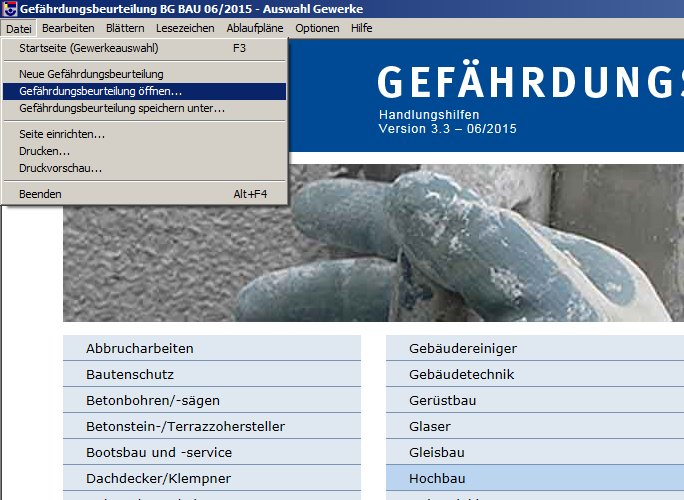
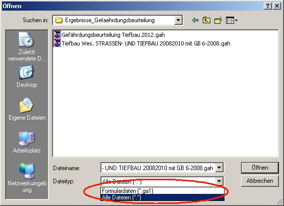
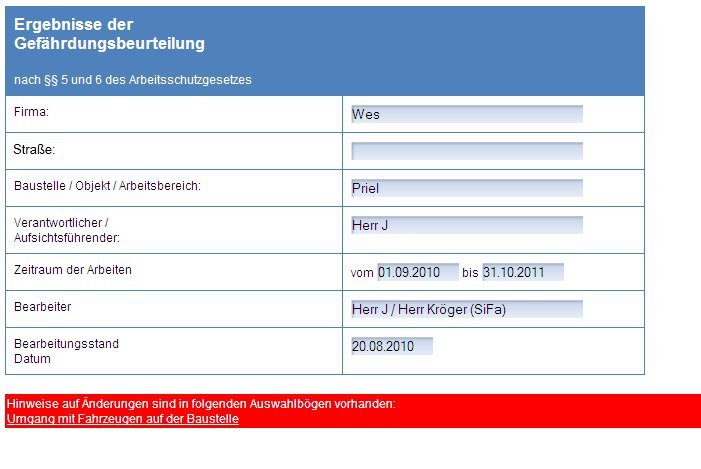
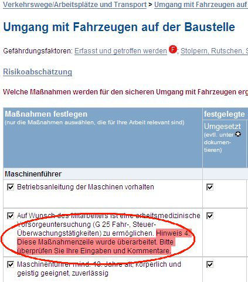

Gehen Sie folgendermaßen vor:
1. Klicken Sie im Hauptmenü auf "Datei öffnen"

2. Wählen Sie den Ordner aus, der Ihre Dateien zur Dokumentation der Gefährdungsbeurteilung enthält. Wählen Sie die gewünschte Datei aus. Dateiformate sind: *.ga1 (2012/2013); im Falle der noch älteren CD-ROM "Hoch- und Tiebbau-Gewerke", "Ausbaugewerke", "Dienstleistungsunternehmen": *.gah, *.gaa, *.gad. Bitte achten Sie im Fall eines Imports aus diesen Programmversionen besonders sorfältig auf die inhaltliche Richtigkeit der Ergebnisse.

3. Nach dem Einlesen der Daten weist da Programm Sie auf möglicherweise inzwischen nicht mehr aktuelle Informationen oder andere Besonderheiten hin.

4. Folgen sie in diesen Fällen den Empfehlungen in den Maßnahmenzeilen ("Hinweise"). Prüfen Sie die neue Gefährdungsbeurteilung auf inhaltliche Richtigkeit und Aktualität.

5. Speichern Sie die aktualisierte Datei unter einem neuen Namen ab.
Falls Sie Fragen zum Import haben oder Unterstützung brauchen, wenden Sie sich an:
support@bc-verlag.de